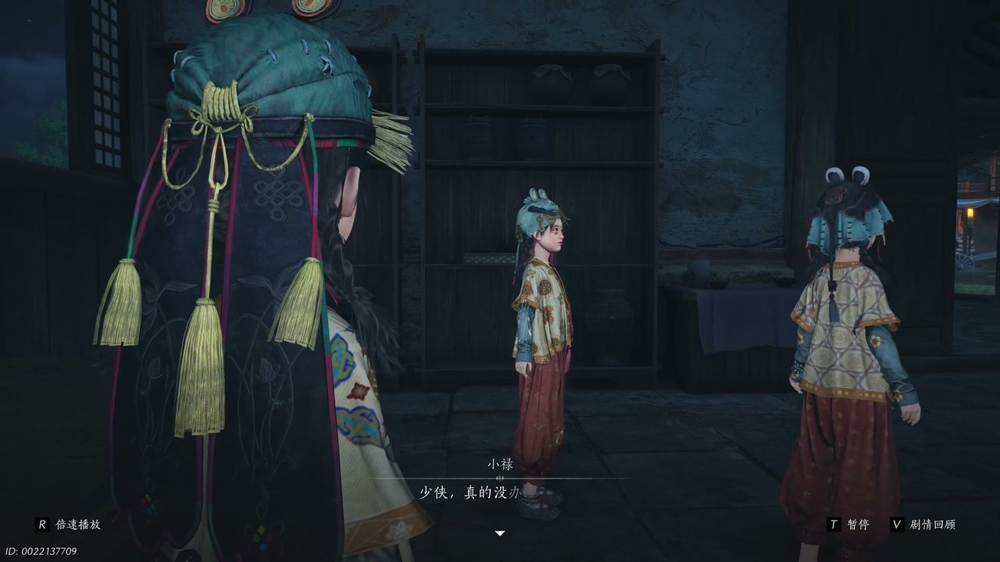

燕云背后的故事：第7集 第七集 盈盈

朋友们，上一集咱们说到——唐钱乱象、聚宝盆迷局、七日断魂死限，整座开封城都被钱财风波搅得人心惶惶。新来的朋友可能纳闷，好好一座都城，怎么会闹到没钱花、不敢花钱的地步。简单说，五代皇权更迭不断，民间私币泛滥，官府强硬打压私藏唐钱，无数寻常百姓平白遭殃。可他哪知道，朝堂江湖多方算计，早就把普通人当成了棋子。这不，走投无路的百姓满心怨苦，一场牵扯无数隐秘的乱世风波，就此彻底爆发开来。

街巷里冷风卷着尘土，破败墙角处处都是愁容，周寡妇拿着空空如也的钱袋，满心悲愤地对着众人发火，原本用来救治孩子的钱财全被官府没收，她气急败坏地怒斥所有想出的办法全都毫无用处，半点都救不了穷苦人家，更救不了她那染病卧床的孩儿。盈盈轻声上前安抚劝解，跟少东家说起，从前的周寡妇温柔和善，说话从来都不大声，街坊四邻无人不夸她贤惠，可如今被这乱世逼得性情大变，实在让人心疼。说实在的，我看完只觉得心酸，五代连年战乱，帝王轮番更替，普通人家田产被占、亲人离散，想安稳活下去，只能拿性命苦苦支撑，今日不知明日事。高位之人只顾争权夺利，从来不在意底层百姓死活，官府只管收缴铜钱，哪管你家中是否有病人等钱救命。少东家也忍不住感慨，铜钱辛苦挣不来，唐钱偏偏留不住，这乱世人间，本就没有公道可言。盈盈接话叹息，说周寡妇的遭遇不过是万千苦难中最寻常的一桩，若不从上头根子上扭转局面，这样的悲剧只会日复一日地重演。

龟奶奶的小院阴冷潮湿，空气中弥漫着淡淡的悲伤气息，院角的枯树歪斜着，像是随时都会倒下。官府借着严查私藏唐钱的由头，在开封城内大肆抓捕无辜百姓，抓到的人全都要押进阴森的灰坑熔炉做苦役，铁链声和哭喊声隔几条街都能听见。饱受十一年前屠城阴影折磨的龟奶奶精神恍惚，总是错把旁人认作自己早已离世的女儿盈盈，嘴里喃喃念叨着女儿的名字，眼神空洞涣散。少东家细心察觉破绽，步步追问过往旧事，发现龟奶奶的记忆深处藏着一场大火和满城的尸首。你别说，盈盈的身世格外凄凉，她本是锦衣玉食的豪门千金，家族奢华无度，酒肉堆成山，可那些奢靡的酒肉一点点吞噬人心情义，最后她被家族无情抛弃，像一块破布般扔在乱葬岗旁。幸好龟奶奶出手相救，捡回一条性命，也正因如此，她下定决心，一定要夺回本该属于自己的一切，让那些负她的人血债血偿。少东家听完沉默良久，只觉得豪门深宅里的勾心斗角，比江湖刀剑更让人心寒。

开封街头突然爆发混乱劫掠，嘈杂哭喊与杂乱脚步声交织在一起，摊贩掀翻了货担，行人四散奔逃，年幼懵懂的小福在人群慌乱中意外走失，所有人都心急如焚，当即分散开来四处寻找孩子，赵大哥嗓子都喊哑了。少东家顺着凌乱脚印一路追查，穿过几条逼仄的小巷，径直闯入传闻凶险万分的灰坑地界，这里被凶名赫赫的无忧帮盘踞，遍地都是作恶多端的歹人，角落里堆着锈蚀的刑具，空气中弥漫着铁锈和汗臭。刚踏入此地，少东家就遭到一众帮派打手围攻阻拦，刀光棍影扑面而来，若不是他身手敏捷，险些当场挂彩。说实在的，换谁孤身闯入贼窝都会心惊胆战，好在九流门弟子王峰及时出手解围，三两下撂倒几名喽啰，不仅告知小福逃往了鬼幡楼，还送上通行钥匙与路线，叮嘱少东家务必小心楼内机关。王峰点明这片灰坑，就是走私唐钱、关押无辜百姓的黑暗深渊，里头藏着说不尽的肮脏勾当，少东家攥紧玉佩，暗暗发誓要把这窝点连根拔起。

阴森诡异的鬼幡楼四处挂着破旧幡旗，风一吹便发出簌簌声响，像鬼魂低泣，空气中满是压抑阴冷的气息，脚下木板吱呀作响，每一步都让人提心吊胆。少东家小心翼翼深入楼内，避开几处暗藏的绊索和捕兽夹，终于找到了被恶人拘禁的小福与阿禄，两个孩子缩在角落，脸色苍白，显然受了不少惊吓。一番对峙盘问之下，两个孩子说出震惊全城的真相，阿禄战战兢兢地指着楼上的铜钱机关，声音发颤。我跟你说，谁都没想到大名鼎鼎的生金瓯，压根就是一场骗局。樊楼群英会上耀眼的宝盆，不过是未央城醉花阴布置的幻术，那些璀璨金光全是光影折射的把戏，清脆铜钱声响、满地散落钱币全是刻意伪装，盆底还藏了吸铁石操控钱币滚动。众人假借宝盆失窃闹事，实则偷偷走私唐钱流入开封，用这种隐秘方式，缓解全城难以收拾的钱荒困局，背后牵涉的利益链条盘根错节，连无忧帮和九流门都掺和其中。少东家听完心头大震，总算摸清了这盘棋的脉络。

昏暗潮湿的暗道四通八达，墙壁上渗着水珠，火把的光影在石壁上晃动，众人的脚步声被狭窄甬道放大成沉闷的回响。众人依照九流门传来的消息，打算前往暗河渡口搭乘渡船悄悄撤离险境，水声隐约可闻，似乎离出口不远了。少东家急忙赶去接应盈盈一行人，穿过数条岔路，心头焦急万分，可人性终究经不起乱世考验，周寡妇为了保住自己孩子的性命，狠心背叛所有人，趁大家不备偷偷溜走，主动带着官兵封锁整条暗道退路，火把照亮了出口，刀剑林立。官兵嚣张叫嚣，当众揭穿东阙公子早已被未央城驱逐、一身武功尽数荒废的真相，嘲弄众人不过是被利用的棋子。危急关头，盈盈没有丝毫退缩，她神色平静却目光决绝，主动留下来独自断后，用自己拖住所有追兵，让身边无辜之人全都平安逃出险境，她只对少东家说了一句“替我照顾好龟奶奶”，便转身迎向那片刀光。少东家咬牙带着众人撤退，心中既感激又愧疚。

开封大街小巷人声纷乱，熔炉外围戒备森严，官兵三步一岗五步一哨，铁栅栏后隐约可见被押送的百姓佝偻着背影。盈盈临行前留下的锦囊安稳交到少东家手中，锦囊里藏着一页薄纸，上头写着几行娟秀小字，细细琢磨之后，少东家瞬间读懂其中妙计，立刻发动全城百姓沿街传唱聚宝盆乞怜歌谣，用铺天盖地的民间舆论，死死牵制住官府的视线。要说这一招是真高明，百姓成群结队哼唱歌谣，声音从街头传到巷尾，从清晨唱到日暮，官兵根本分不清谁是乱党谁是普通人，严密防线瞬间乱作一团，领兵的校尉急得满头大汗，四处抓人却又怕激起民变。少东家找准时机，打算藏进运送钱财的车辆，悄悄潜入戒备森严的熔炉，救出那些被无辜关押、受尽折磨的底层百姓，他换上一身粗布短打，混在运粮队伍里，屏住呼吸等待入内的那一刻。临行前他回头望了一眼城楼，心里清楚这一去凶多吉少，但想到盈盈的托付和满城百姓的苦难，便再无半分犹豫。
这一集看下来，我最大的感受就是乱世之中，普通人从来都身不由己，善恶对错从来都不由自己选择。上一集我们只知道聚宝盆是虚假圈套、七日解毒时限紧迫、开封钱荒乱象丛生，到了这一集，盈盈悲惨身世、周寡妇无奈背叛、幻术完整真相、灰坑各方势力纠葛一一揭开。小福能否平安躲过追捕？断后的盈盈能不能全身而退？幕后走私唐钱的黑手究竟是谁？一条条剧情线索紧紧缠绕，所有矛盾都汇聚到凶险无比的熔炉大战。少东家孤身闯入龙潭虎穴，步步都是生死险境。下一集牢狱生死对峙，剧情必定更加惊心动魄。大家不妨聊聊，你如何看待周寡妇的无奈抉择，盈盈的锦囊计谋是否足够精妙，记得关注后续，一同揭开未央城深藏的惊天阴谋。
关于我们
📱 公众号名称：三天游戏
✍️ 作者：曾三天
扫码关注公众号，获取每日最新资讯

商务合作与版权
商务合作 / 内容投稿 / 品牌推广
请关注公众号「三天游戏」后台留言联系
版权声明：本文由作者整理，转载需注明出处。